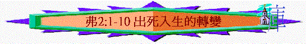

引言
在你生命中，有沒有遇過「死過翻生」「險象環生」的經歷（自己／別人）？ 試分享
我們在信仰中也有「死過翻生」及出死入生的經歷，今日試從弗2:1-10中看一看
一.在過犯中死的光景(2:1-3)
1.2:1提到你們，是指誰？你們死在過犯罪惡中是什麼意思？ 此死字有一具屍體意思，可譯在過犯罪惡中是一具屍體，代表什麼事情？
A.任過犯罪惡擺佈，過行屍走肉犯罪的生活
B.因犯罪帶來肉身及靈性上的死亡
2.2:2那時我們行事為人受什麼擺佈?
你認為今天世界中有什麼不好的風俗或不好的潮流文化?
你在未信主前，受什麼不好的世俗思想文化影響？
3.2:2
空中掌權者是什麼意思? 6:12又如何補充「空中」的意思?屬靈氣的(靈界)
誰是首領? 撒旦 牠有什麼特色?
是靈的,能在人心中工作,是有權的
現在在那裡? 在悖逆之子心中運行
什麼叫悖逆?
disobedient
不遵守命令及不服從的
悖逆之子指誰? 未信的人
4.你在未信前，你認為自己是否有悖逆的特質？ 為什麼有此看法？
5.2:3提到從前我們的行為是怎樣？ 何謂肉體的私慾？渴望及嚮往肉體的事 何謂放縱？
任憑及隨從肉體和心中的喜好行,沒有自制,過份
6.加5:19-21提到人會有什麼肉體的私慾?
你認為在你所認識的環境中，最多人有的是什麼的私慾？
7.2:3提到放縱肉體的人是什麼的人？ 可怒之子是什麼意思？ 你最近有沒有試過作了一些事，令父母發怒的？ 若今天我們令父神發怒，你認為是否嚴重的事？ 為什麼？
二.在恩典下活的轉變(2:4-9)
1.2:4「然而」是什麼意思?
前文提及我們未信主前是什麼身份?
可怒之子及悖逆之子 而神怎樣對我們? 何謂憐憫?
慈悲、憐恤、寬厚、可憐
保羅怎樣形容這憐憫?
你同意嗎?
2.2:5
神又在我們身上作了什麼的工? 與基督一同活過來是什麼意思?
與前文死在過犯中有什麼分別?
不在被罪擺佈，如活人一樣是有能力可離開的
3.你信了主後，有沒有與基督一同活過來（不在被罪擺佈）的經歷？
4.2:6又提到我們與基督又將會發生什麼事?
何謂復活? 你信你能死後復活嗎? 為什麼?
一同坐在天上又是什麼意思? 在高位上有榮耀
5.2:7提到神使我們在基督裡活過來有什麼心意?
何謂恩典及恩慈? 恩典:主動的施予
恩慈: 仁慈、慷慨
何謂極豐富?
充裕、優裕、富裕
有沒有經歷過有人對你顯出恩典及恩慈?
6.2:8
我們今天得救—出死入生，是在乎什麼？ 是否因自己的行為呢？為什麼？ 何謂「賜」?
同工人得工價有什麼分別?
7.2:9若救恩不是出於自己及行為，我們就不要怎樣？ 試分享你怎得救？
三.在基督裡善的心意 (2:10)
1.2:9又提及什麼事?
我們原是神的工作，祂叫我們出死入生後，想我們怎樣？何謂善？ 有用、有價值、有益、好的行為、有幫助的
2.我們今天可以在神及人前作什麼善的事?
3.你信主後，有沒有想過可為主作什麼的事呢？
總結:試分享2:1-10最深刻的一節經文
祈禱